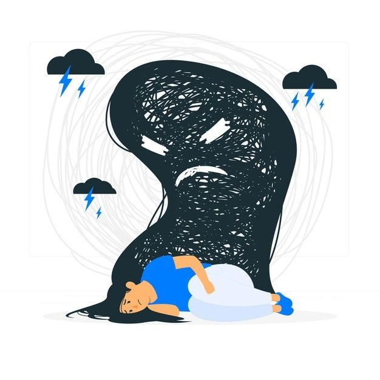
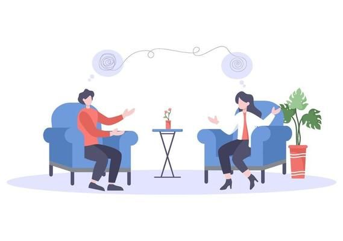

Saúde mental:
Ansiedade:
Como lidar com a Ansiedade Segundo a OMS (Organização mundial da saúde) 9,3% da população brasileira tem ansiedade. A ansiedade costuma estar presente em situações de estresse do nosso dia a dia e nos ajuda à ficarmos alertas para eventuais perigos. Porém quanto a ansiedade fica aumentada, acaba ocorrendo uma descarga de neurotransmissores que afetam o nosso corpo e a nossa vida. Procure ajuda se 3 ou mais dos sintomas abaixo estejam presentes na maioria dos dias, nos últimos 6 meses.
- - Inquietação ou sensação de que você está com os nervos a flor da pele.
- - Fadiga, cansaço.
- - Dificuldade de concentração ou também lapsos de memória.
- - Irritabilidade.
- - Tensão muscular. A ansiedade, em excesso, pode ser controlada e a psicoterapia é uma das formas. O psicólogo pode, durante o processo de psicoterapia, perceber se existe a necessidade que você busque outro profissional, como o psiquiatra, que pode indicar o uso de algum medicamento, por um determinado tempo, até que você tenha conseguido trabalhar com o psicólogo um pouco das questões que te fazem ficar com muita ansiedade. Se tiver dúvidas, faça contato!

Cuidados/Ansiedade:
Depressaõ

Cuidados/Depressão:
cuide